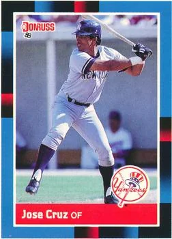

José Cruz "Cheo"
Career Highlights & Facts
(Facts are AI-generated and may require verification)
- Two-time All-Star selection occurred during a 13-season tenure with the Houston Astros.
- Silver Slugger Awards were earned in consecutive seasons from 1983 to 1984.
- Patriarch of a three-generation professional baseball family including two sons and a grandson who reached the major leagues.
Would you like to find out more about José Cruz?
Career Totals
| WAR | AB | H | HR | BA | R | RBI | SB | OBP | SLG | OPS | OPS+ |
|---|---|---|---|---|---|---|---|---|---|---|---|
| 54.5 | 7917 | 2251 | 165 | .284 | 1036 | 1077 | 317 | .354 | .420 | .774 | 120 |
Statistics via Baseball-Reference.com
The Original Clue